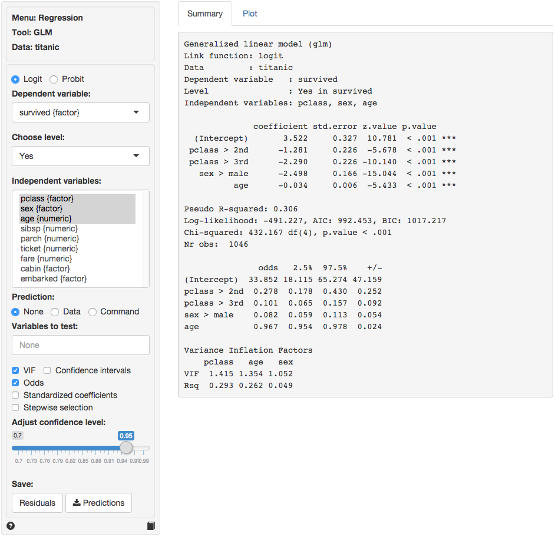
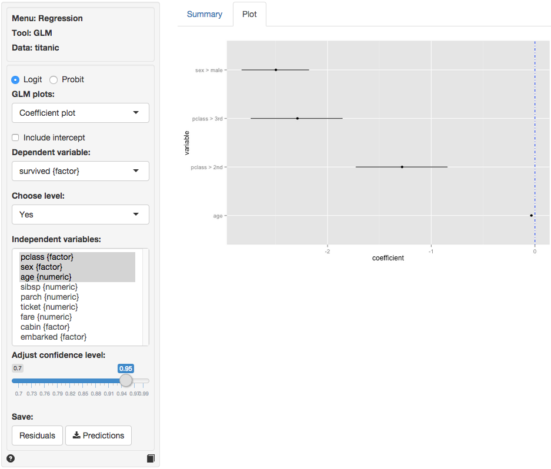
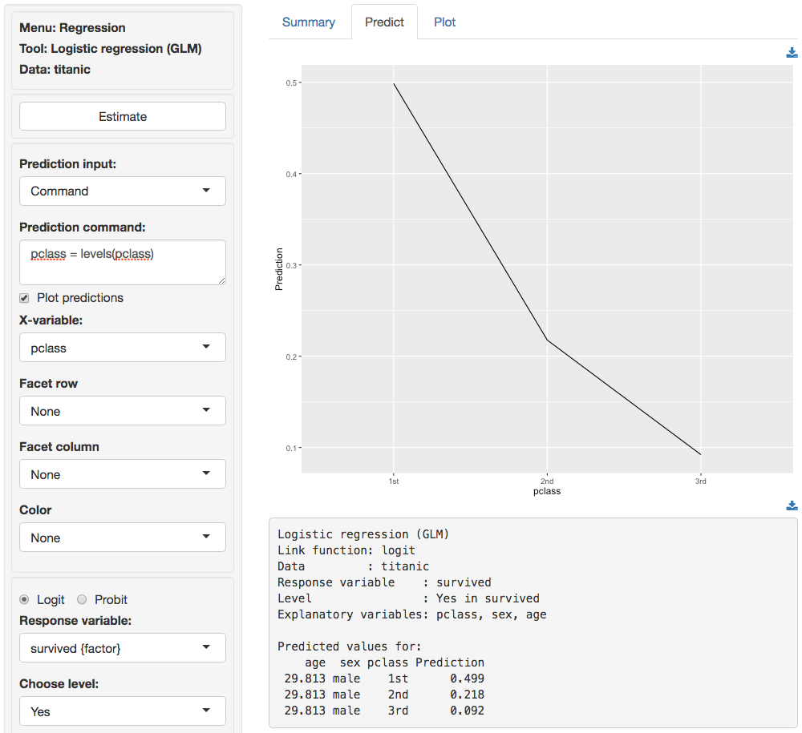

Regression > GLM
Estimate a Logit (Probit) model
Functionality
Selecting a binary dependent variable and one or more independents variables. Also specify the level of the dependent variable to use as success (i.e., the Choose level: dropdown). In the example data file titanic, success for the variable survived would be the level Yes.
Predicting probabilities for different values of the independent variable(s) is a very common operation for GLM models. First, select the type of input for prediction using the Prediction radio buttons. Choose either an existing dataset for prediction (“Data”) or specify a command (“Command”) to generate the prediction inputs. If you choose to enter a command you must specify at least one variable and one value to get a prediction. If you do not specify a value for each variable in the model either the mean value or the most frequent level will be used. It is only possible to predict outcomes based on variables used in the model (e.g., age must be one of the selected independent variables to predict survival probability for a 90 year old passenger).
- To predict the survival probability for a passenger in 3rd class use
pclass = "3rd"and press enter - To predict the survival probability for passengers aged between 0 and 90 at 10 year intervals type
age = seq(0, 90, 10)and press enter - To predict the survival probability for passengers per class and gender type
pclass = levels(pclass), sex = c("male","female")and press enter
As an example of how to use data as input for prediction (e.g., predict the survival probabilities for 30 year old men and women in each of the passenger classes) you can use titanic_pred. Select titanic as the dataset for analysis and specify a model in Regression > GLM with pclass, sex, and age as independent variables. Click the Data radio button and select titanic_pred from the dropdown to generate the predictions. Note that the variables in the datafile and in the model must be the same.
To generate predicted values for all cases in, for example, the titanic dataset click the Data radio button and then select the dataset from the dropdown. You can also create a dataset for input in Excel and then paste it into Radiant through the Data > Manage menu. You can also load csv data as input. For example, load this example csv file into Radiant through the Data > Manage tab and try to generate the same predictions (right-click the link to save the file).
Once the desired predictions have been generated they can be saved to a csv file by clicking the Predictions button on the bottom left of the screen.
Various additional outputs and options can be selected:
- VIF: Variance Inflation Factors and Rsq. These are measures of multi-collinearity for the independent variables
- Standardized coefficients: Coefficients may be hard to compare if the independent variables are measured on different scales and variances. By standardizing the data before estimation we can see which variables move-the-needle most
- Step-wise: A data-mining approach to select the best fitting model
- Variables to test: We can test if two or more variables together add significantly to the fit of a model. This function can be very useful to test if the overall influence of a variable of type
factoris significant.
Example
We will use a dataset that describes the survival status of individual passengers on the Titanic. The principal source for data about Titanic passengers is the Encyclopedia Titanic. One of the original sources is Eaton & Haas (1994) Titanic: Triumph and Tragedy, Patrick Stephens Ltd, which includes a passenger list created by many researchers and edited by Michael A. Findlay. Suppose we want to investigate which factors are most strongly associated with the chance of surviving the sinking of the Titanic. Lets focus on four variables in the database:
- survived = a factor with levels
YesandNo - pclass = Passenger Class (1st, 2nd, 3rd). This is a proxy for socio-economic status (SES) 1st ~ Upper; 2nd ~ Middle; 3rd ~ Lower
- sex = Sex (female, male)
- age = Age in years
Select survived as the dependent variable with Yes in Choose level. Select pclass, sex and age as the independent variables. In the screenshot below we see that each of the coefficients is statistically significant (p.value < .05) and that the model has some predictive power (Chi-squared statistic < .05). The vif measure suggest that multi-collinearity is not a concern in this model. Unfortunately the coefficients from a logit of probit model can be difficult to interpret. If we click the Odds checkbox we see that the odds of survival for 2nd and 3rd class passengers were significantly lower for 2nd and 3rd class passengers compared to first class passenger. The odds for males were also lower than for females. While the effect of age is statically significant, for each extra year the odds of survival are not as strongly affected (see also the standardized coefficient).

In addition to the numerical output provided in the Summary tab we can also evaluate the link between survival, class, gender, and age visually (see Plot tab). The settings in the side-panel are the same as before. The tab displays a coefficient plot with confidence intervals. The relative importance of gender and class compared to age clearly stand out. Note: click the check box for standardized coefficients in the Summary tab and see if your conclusion changes.

Probabilities, are more convenient for interpretation than either the coefficients from a logit (probit) model or the odds. To see how survival probabilities change across passenger classes click the Command radio button in the Predict tab, type pclass = levels(pclass) in the Prediction command box, and press return.

The figure shows that the probabilities drop sharply between 1st, 2nd, and 3rd class. For males of average age (approx. 30 in the sample) the survival probability was close to 50%. For 3rd class passengers this probability was closer to 9%.
age sex pclass pred
29.881 male 1st 0.499
29.881 male 2nd 0.217
29.881 male 3rd 0.092To see the effects of gender type sex = levels(sex) in the Prediction command box and press return. For average age females in 3rd class the survival probability was around 50%. For males with the same age and class characteristics the chance of survival was closer to 9%.
age pclass sex pred
29.881 3rd female 0.551
29.881 3rd male 0.092To see the effects for age type age = seq(0,100, 20) in the Prediction command box and press return. For male infants in 3rd class the survival probability was around 20%. For 60 year old males in 3rd class the probability drops to around 3%. For the oldest males on board the model predicts a survival probability close to 0%.
pclass sex age pred
3rd male 0 0.220
3rd male 20 0.124
3rd male 40 0.067
3rd male 60 0.035
3rd male 80 0.018
3rd male 100 0.009For a more comprehensive overview of the influence of gender, age, and passenger class on the chances of survival we can generate a full table of probabilities by selecting the Data radio button in the Predict tab and selecting Titanic from the dropdown. There are too many numbers to easily interpret in table form but the figure gives a clear overview of how survival probabilities change with age, gender, and pclass: